허브컨트롤룸 모바일
관제 담당자를 위한 HCR 사용 가이드
지도에서 지연을 찾고, 목록에서 배차하고, 상점·라이더·운행 설정까지 업무 순서대로 정리했습니다. 화면은 테스트 환경에서 캡처했고, 이름과 잔액 등은 가렸습니다.
시작하기
처음 로그인하는 분, 앱 전체 구성을 먼저 알고 싶은 분
HCR은 허브 관제 담당자가 휴대폰으로 배달 현황을 보고 배차하는 앱입니다. 화면 아래에는 지도관제, 목록관제, 마이페이지 세 개의 탭이 있습니다. 상점·라이더 관리, 운행 설정, 공지 같은 기능은 모두 마이페이지에서 들어갑니다.
| 하단 탭 | 여기서 하는 일 |
|---|---|
| 지도관제 | 지도에서 지연 상점과 라이더 위치를 보고 바로 배차. 상점·라이더 모드, 배달 검색, 지도 설정 |
| 목록관제 | 접수 · 배차 · 완료 · 예정 탭으로 배달을 목록으로 관리. + 버튼으로 대리 접수와 멀티선택 |
| 마이페이지 | 바로머니와 출금, 관제 허브 선택, 운행 설정, 배달 내역, 라이더·상점 관리, 공지, 허브 자동 지원금, 채팅 상담, 대리 접수, 알림과 시스템 설정 |
- 앱을 열고 아이디와 비밀번호를 입력한 뒤 로그인을 누릅니다.
- 같은 기기에서 다음에도 같은 아이디를 쓰려면 ID 정보 저장을 체크해 둡니다.
- 비밀번호가 기억나지 않으면 로그인 화면의 비밀번호 찾기를 누릅니다.
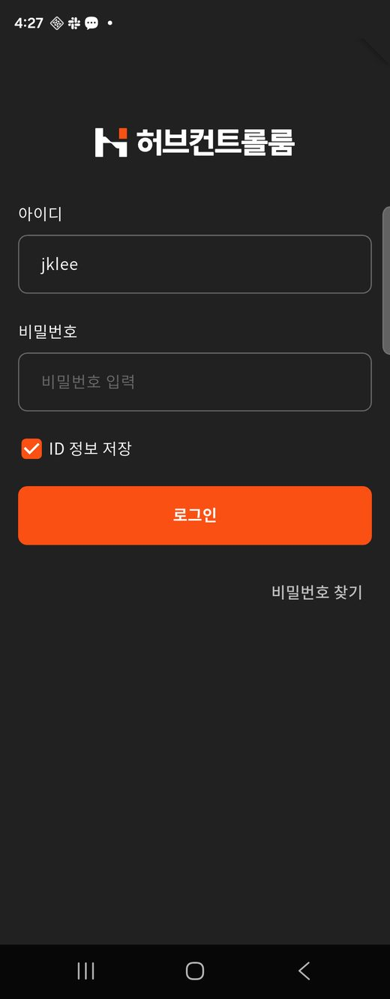
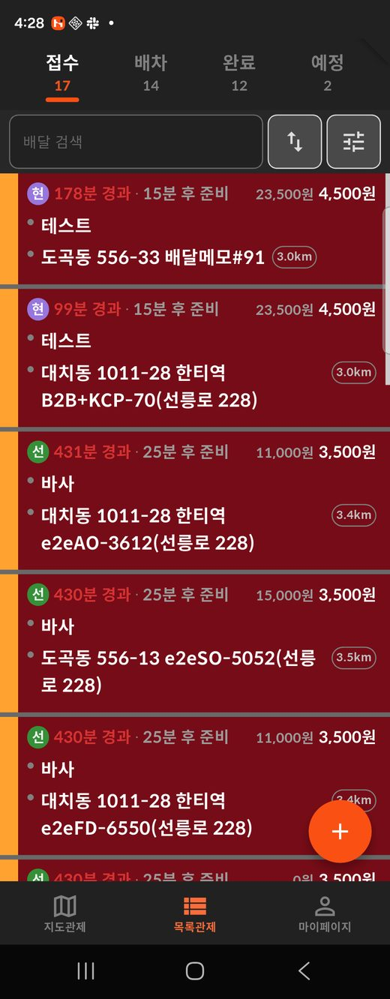
관제할 허브 고르기
마이페이지의 관제 허브 영역을 누르면 허브 선택 화면이 열립니다. 여러 허브를 함께 체크하면 그 허브들의 배달을 한 번에 봅니다. 허브 이름 아래에는 그 허브의 설정할증, 추가할증, 배달수행 상태가 요약되어 나옵니다.
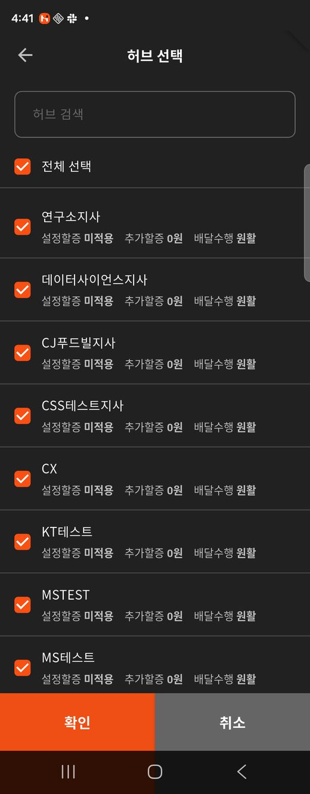
선택한 허브에 따라 건수가 달라집니다
목록관제의 접수 · 배차 · 완료 · 예정 숫자와 목록, 지도의 상점은 모두 선택한 허브 기준입니다. 전체 선택을 끄면 모든 허브가 해제되고, 이 상태에서는 확인 버튼이 눌리지 않습니다. 허브를 하나 이상 고른 뒤 확인을 누르면 적용됩니다.
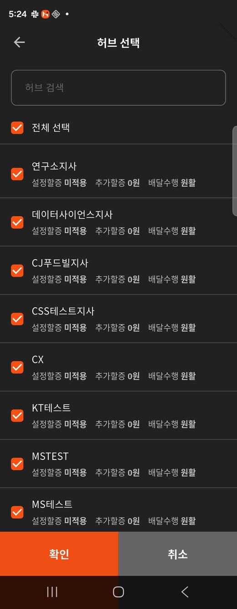
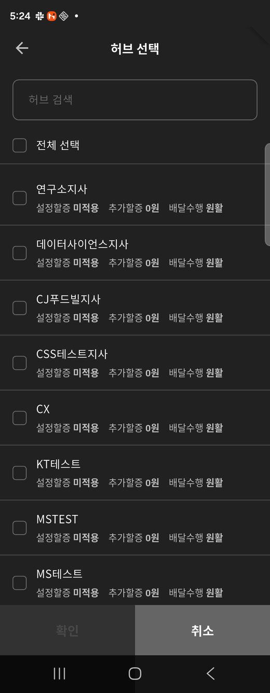
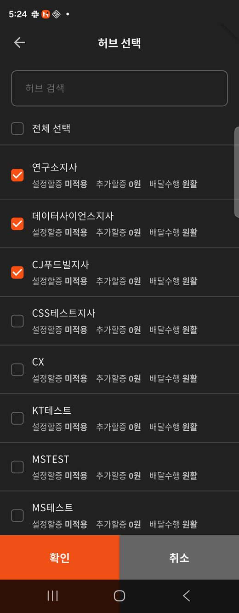
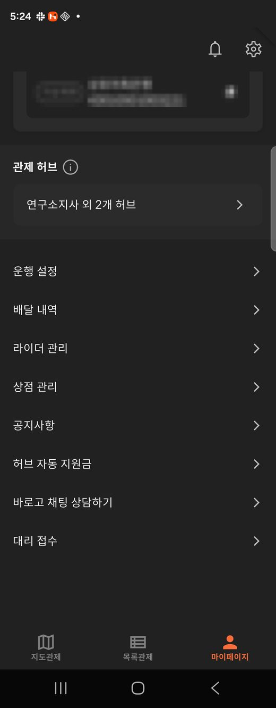
| 선택 | 마이페이지 표기 | 접수 / 배차 / 완료 / 예정 |
|---|---|---|
| 전체 선택 | 연구소지사 외 179개 허브 | 30 / 22 / 26 / 3 |
| 허브 3개 선택 | 연구소지사 외 2개 허브 | 6 / 2 / 1 / 0 |
| 연구소지사만 선택 | 연구소지사 | 6 / 2 / 1 / 0 |
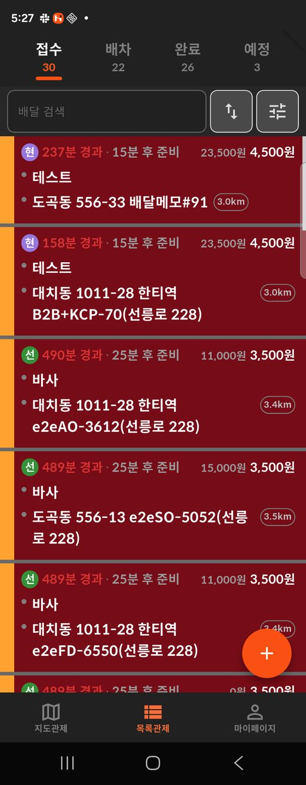
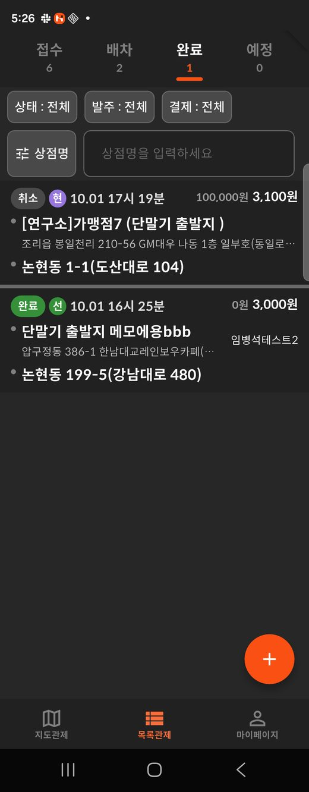
지도관제
지금 어느 상점에 지연이 몰려 있는지, 라이더가 어디에 있는지 한눈에 볼 때
지도 위에 상점, 배달 경로, 라이더가 표시됩니다. 아래 패널의 상점목록과 배달목록을 전환해서 보고, 상점 옆의 지연 N | 전체 N으로 문제가 있는 상점을 바로 찾습니다.
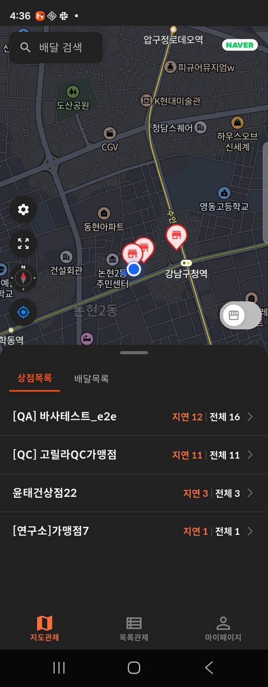
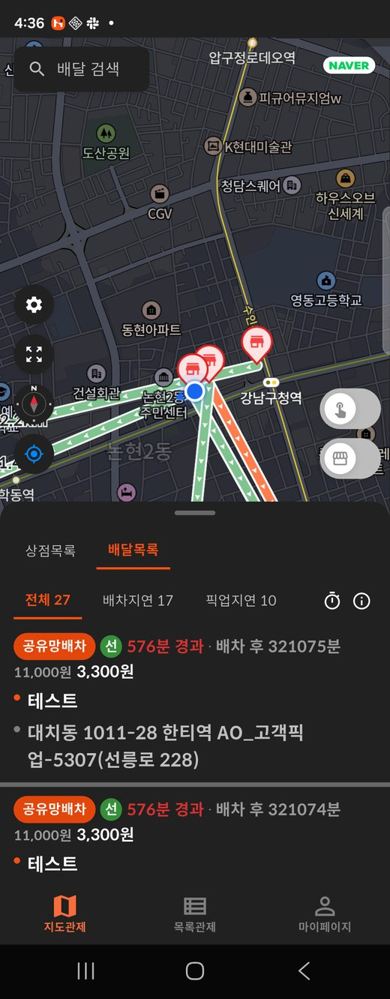
지도 색상 읽는 법
| 대상 | 색 | 의미 |
|---|---|---|
| 상점 마커 | 파랑 | 지연 없음 |
| 빨강 | 배차·픽업 지연 있음 | |
| 배달 경로선 | 초록 | 접수 |
| 주황 | 배차(픽업 대기) | |
| 파랑 | 픽업 완료 | |
| 라이더 마커 | 초록 | 대기 |
| 보라 | 휴식 | |
| 파랑 | 운행 |
상점을 눌러 배달 확인하기
- 상점목록에서 상점을 누르면 그 상점의 배달이 지도에 경로선으로 나타납니다.
- 경로선 가운데에 상점에서 도착지까지의 거리가 표시되고, 도착지에는 도 마커가 찍힙니다.
- 패널의 탭으로 전체, 배차지연, 픽업지연 배달만 골라 봅니다.
- 패널 오른쪽 위의 시계 아이콘을 누르면 지연 기준 안내가, 정보 아이콘을 누르면 다중선택 방법이 나옵니다.
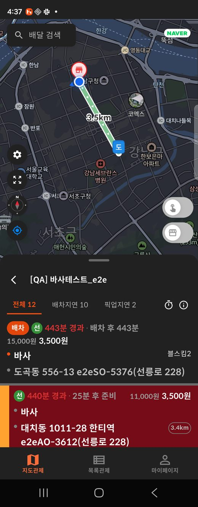
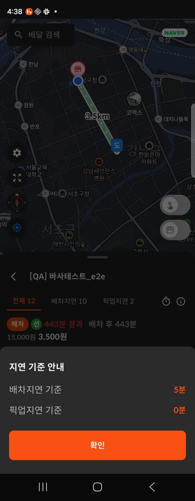
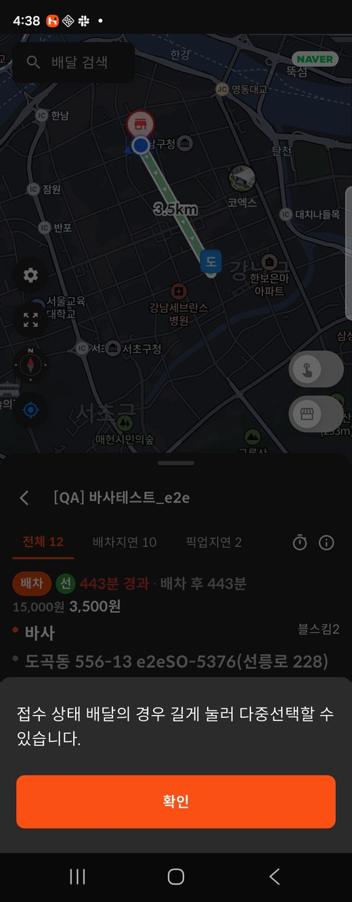
라이더 모드로 보기
지도 오른쪽의 상점 모양 버튼을 누르면 라이더 모드로 바뀝니다. 전체, 운행, 대기, 휴식, 자사 기준으로 라이더를 나눠 보고, 라이더마다 배차·픽업 건수를 확인합니다. 운행 중인 라이더를 누르면 그 라이더가 수행 중인 배달이 경로선과 함께 나옵니다.
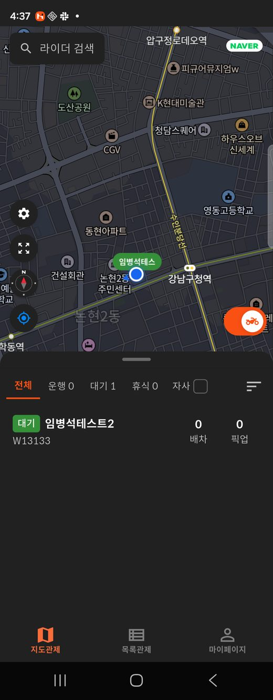
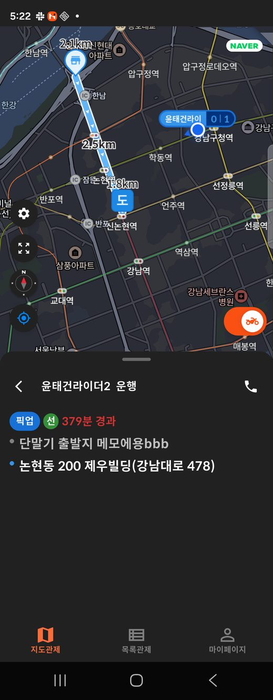
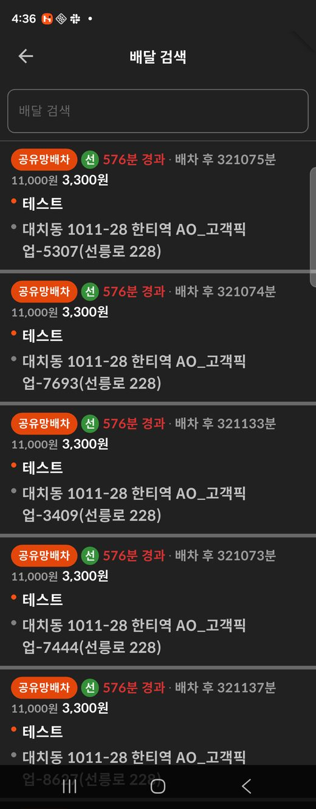
겹친 항목이 있을 때
같은 위치에 상점이나 배달이 겹쳐 있으면 누를 때 겹친 항목 중 하나를 선택하세요 목록이 나옵니다. 각 줄에 픽업지연, 배차지연 같은 상태가 함께 표시되므로 원하는 배달을 골라 누릅니다.
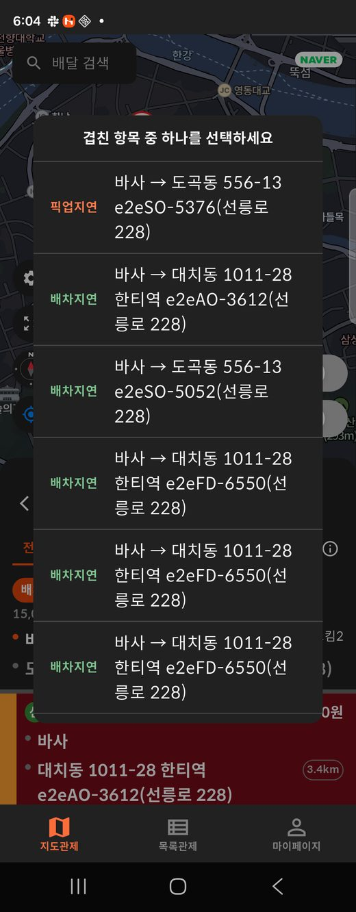
지도관제 설정
왼쪽 톱니바퀴를 누르면 지도 테마, 내 위치·나침반·전체보기 버튼 표시, 배차지연 기준(분), 픽업지연 기준(분), 배달 보기 방식(모든배달 / 지연배달), 처음 열릴 화면을 바꿀 수 있습니다. 설정은 오른쪽 위 초기화로 되돌립니다.
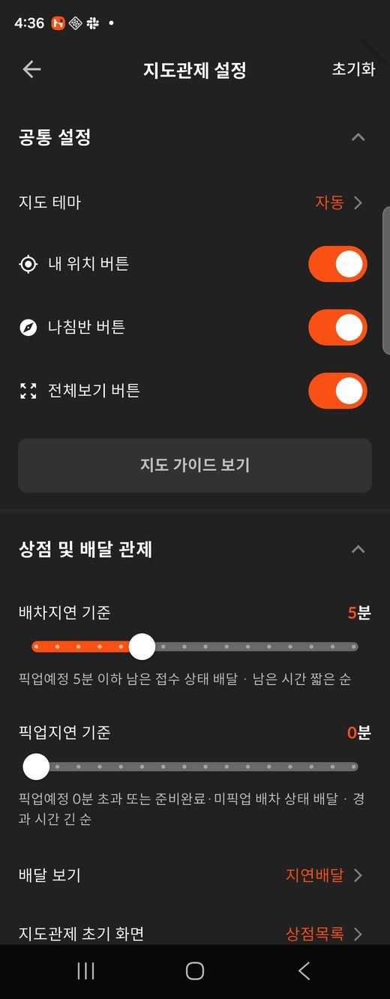
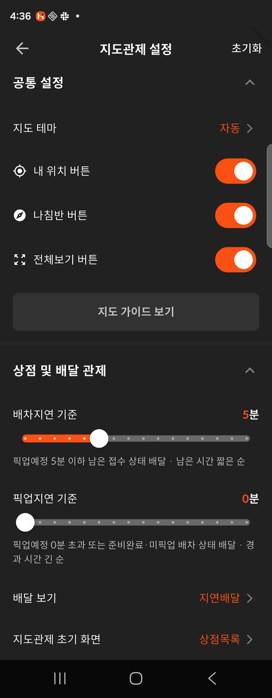
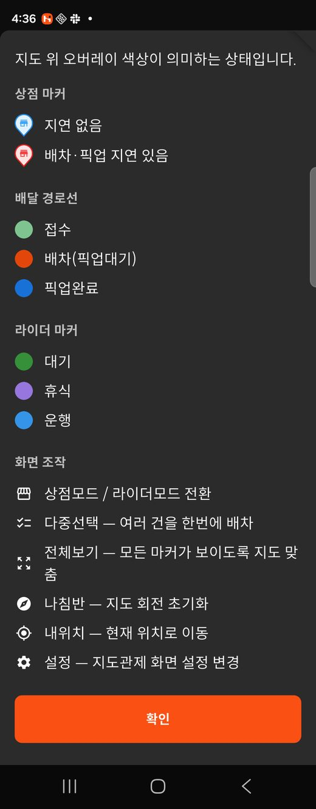
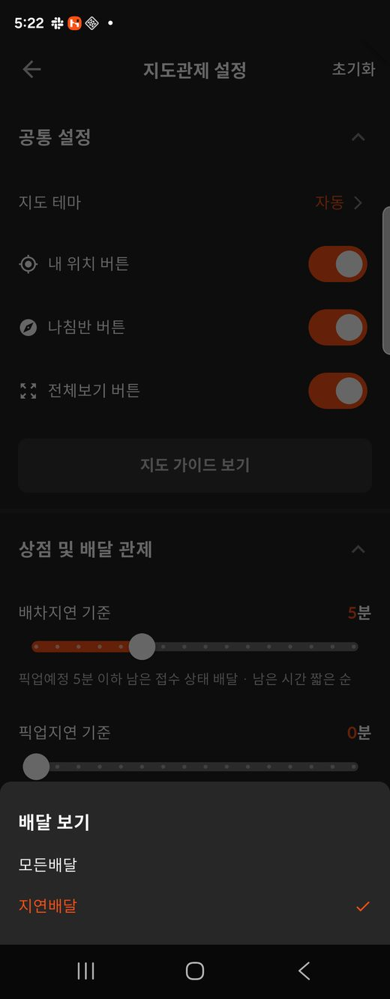
지도에서 바로 배차하는 방법은 배차하기에서 설명합니다.
목록관제
접수된 배달을 목록으로 훑거나, 끝난 배달과 예약·대기 배달을 찾아볼 때
위쪽 탭은 접수, 배차, 완료, 예정이고 숫자는 각 탭의 건수입니다. 배달은 상태가 바뀌면서 탭을 옮겨 다닙니다.
flowchart TD R["예약 · 대기
(예정 탭)"] -->|"예약해제 · 접수로 변경"| A["접수
(접수 탭)"] A -->|"배차요청"| Q["배차요청
(접수 탭)"] Q -.->|"라이더 거절"| A Q -->|"라이더 승낙"| B["배차 → 픽업지 도착 → 픽업 완료
(배차 탭)"] A -->|"즉시배차"| B B --> D["배달 완료
(완료 탭)"] A -.->|"취소"| X["취소
(완료 탭)"]
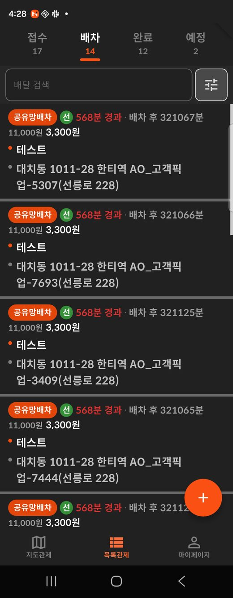
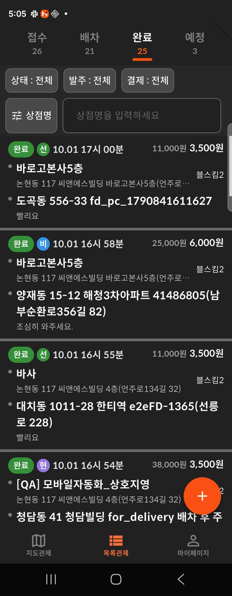
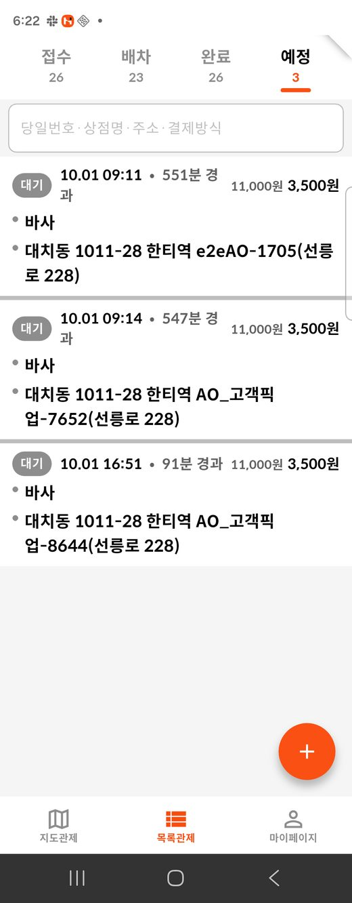
접수 탭: 찾기, 정렬, 필터
- 배달 검색창에 검색어를 입력해 배달을 찾습니다.
- 위아래 화살표 버튼으로 보기 순서를 고릅니다. 경과 시간 순, 내가 소속된 허브 순, 최신 순, 높은 배달대행료 순이 있습니다.
- 오른쪽 필터 버튼으로 전체, 공유배달 숨김, 주소기반 중 보는 방식을 고릅니다. 주소기반은 고릴라 주소기반으로 들어온 배달만 보여줍니다.
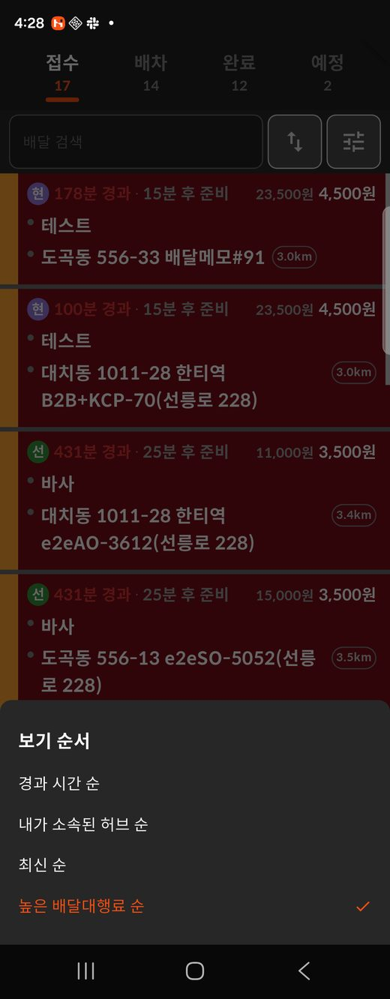
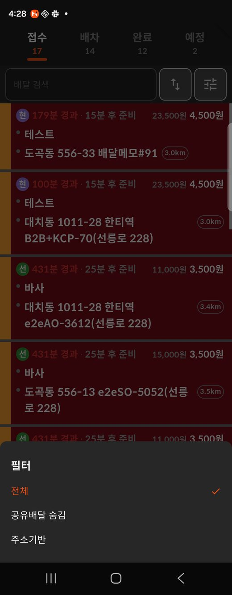
완료 탭: 지난 배달 찾기
완료 탭에서는 상태, 발주, 결제 칩으로 범위를 좁히고, 아래 검색창에서 상세 조건으로 찾습니다. 필터를 고르면 칩 옆에 초기화가 나타납니다.
| 필터 | 선택 항목 |
|---|---|
| 상태 | 완료, 취소, 공유망 완료 (여러 개 동시 선택) |
| 발주 | 전체, 자사, B2B, 공유 |
| 결제 | 전체, 선결제, 카드, 현금 |
| 상세검색 | 상점명, 담당, 수행허브명, 발주허브명, 당일순번, 배달번호 |
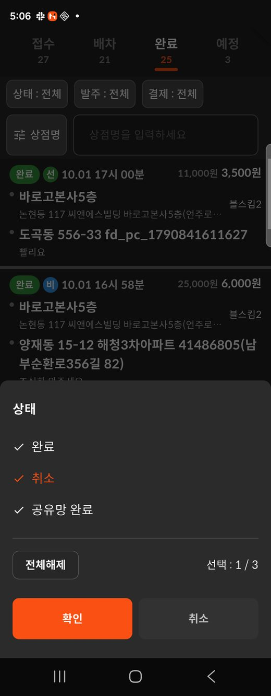
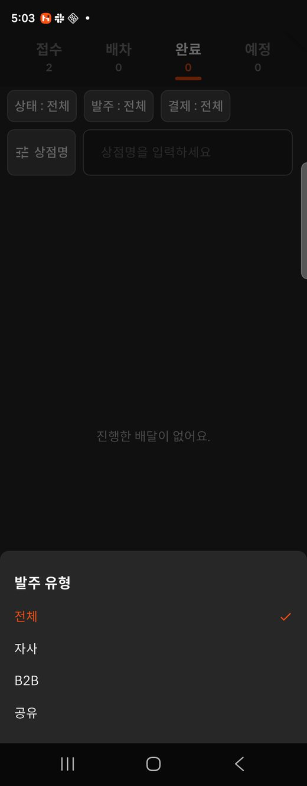
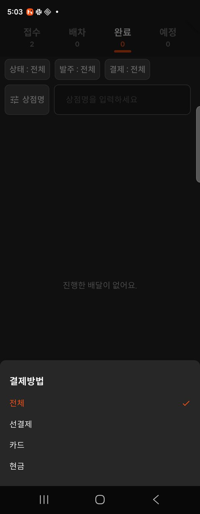
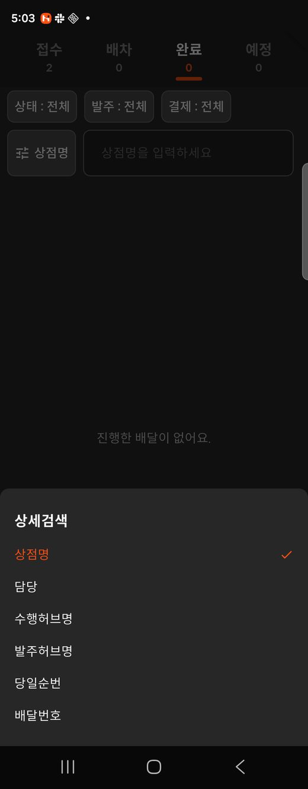
예정 탭: 예약과 대기 배달
예정 탭에는 예약과 대기 상태의 배달이 모입니다. 아직 접수 단계가 아니어서 배차 대상이 아니고, 검색(당일번호·상점명·주소·결제방식)만 쓸 수 있습니다. 대기 배달이 항상 예약 배달보다 위에 나옵니다.
| 표시 | 어떤 배달인가 | 목록에 나오는 정보 |
|---|---|---|
| 예약 | 예약 시각이 정해진 배달 | 배달노출 시각과 N분 후 노출(노출까지 남은 시간). 예약 시각은 메모의 [예약 10월 02일 20시 00분]처럼 표시 |
| 대기 | 대리 접수에서 대기 상태로 접수를 켜고 넣은 배달 | 접수 시각과 N분 경과 |
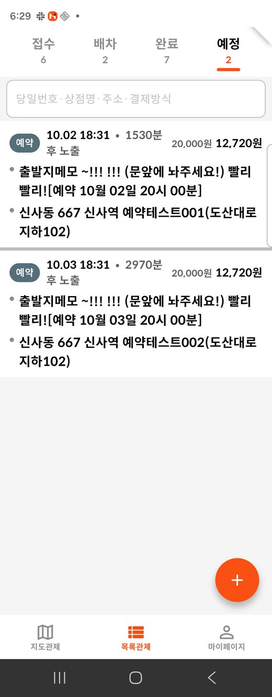
예약 배달을 누르면 예약 상세가 열립니다. 배달대행료(대행료 수정), 예약시간·배달노출, 출발지와 도착지(도착지 수정), 연락정보, 상품 및 결제정보(결제 변경), 배달정보가 있고 맨 아래 버튼으로 다음 작업을 합니다.
| 버튼 | 하는 일 |
|---|---|
| 예약해제(접수) | 확인 창에서 확인하면 예약을 풀고 접수 상태로 바꿉니다. 예정 탭에서 사라지고 접수 탭에 나타납니다. 내 소속 허브의 예약 배달에만 보입니다. |
| 배달취소 | 이 배달을 취소합니다. |
| 라이더지원금 | 이 배달에 라이더 지원금을 지급합니다. 지급 권한이 있는 계정에만 보입니다. |
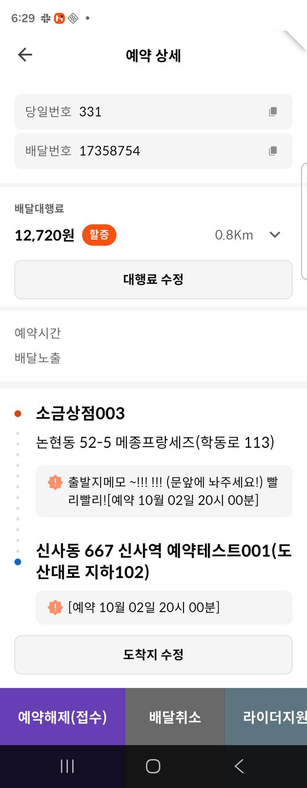
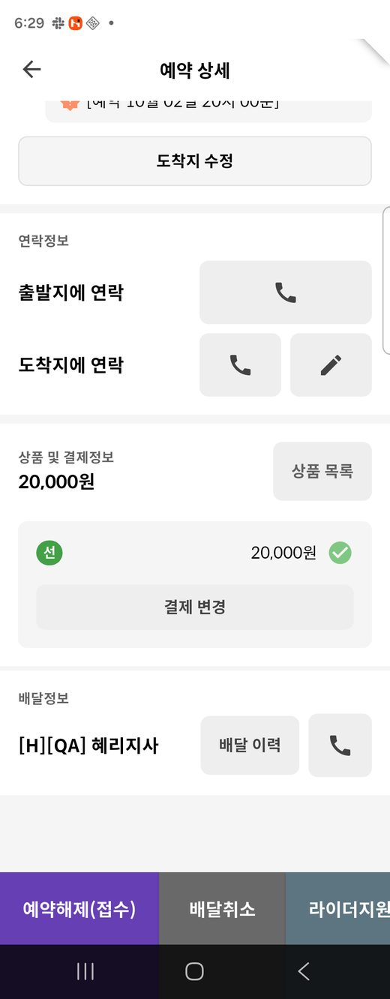
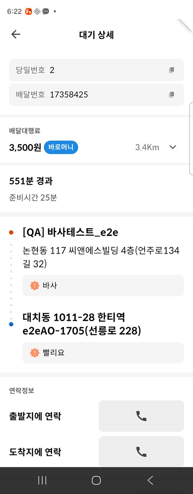
대기 배달을 누르면 대기 상세가 열립니다. 내 소속 허브의 대기 배달이면 아래에 접수로 변경 버튼이 나타나고, 체크박스를 체크한 뒤 확인하면 접수 상태로 바뀝니다. 다른 허브의 대기 배달은 조회만 할 수 있습니다.
배달 상세 보기
목록의 배달을 누르면 상세 화면이 열립니다. 위에서부터 당일번호·배달번호(복사 가능), 배달대행료, 경과·준비 시간, 출발지와 도착지, 연락정보, 상품 및 결제정보, 배달정보 순서입니다. 배달대행료 오른쪽의 화살표를 누르면 항목별 내역이 펼쳐집니다. 화면 제목과 아래 버튼은 배달 상태에 따라 바뀝니다.
| 상태 | 화면 제목 | 아래 버튼(권한·조건에 따라 다름) |
|---|---|---|
| 접수 | 접수 상세 | 배차 |
| 배차요청 | 배차요청 상세 | 배차변경, 배차취소 |
| 배차 | 배차 상세 | 배차변경, 배차취소, 픽업 |
| 픽업지 도착 | 픽업 상세 | 배차변경, 배차취소, 픽업 |
| 픽업 완료 | 픽업 상세 | 배차변경, 배차취소, 완료 |
| 배달 완료 | 완료 상세 | 캡처한 화면에서는 확인되지 않음 |
| 취소 | 취소 상세 | 추가배달 |
| 예약 | 예약 상세 | 예약해제(접수), 배달취소, 라이더지원금 |
| 대기 | 대기 상세 | 접수로 변경 |
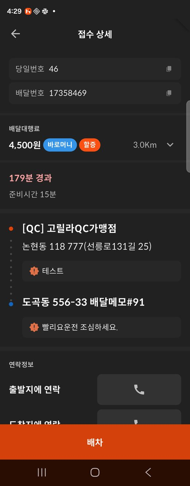
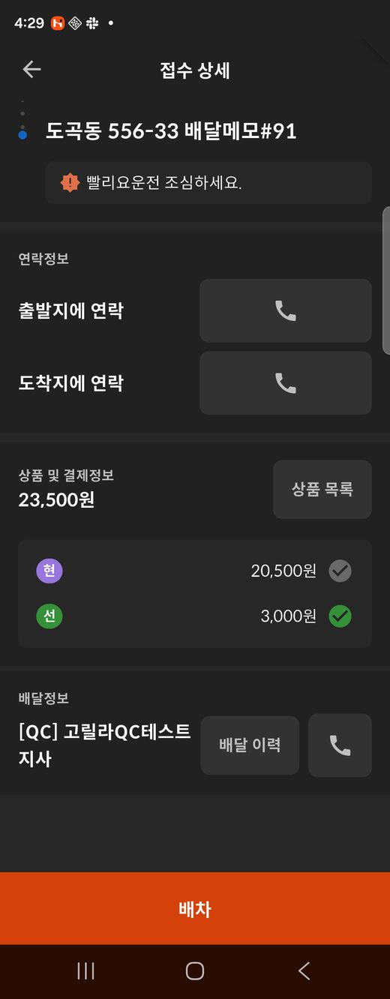
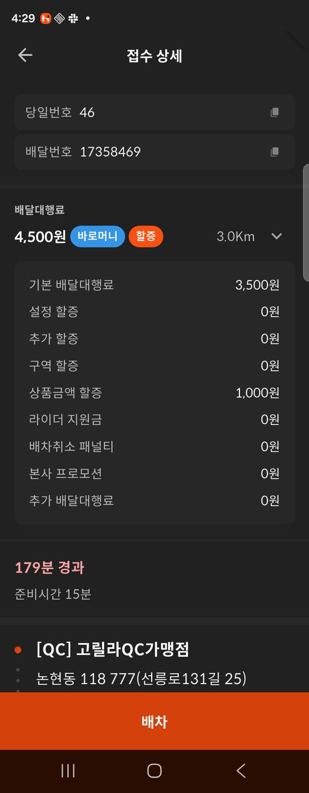
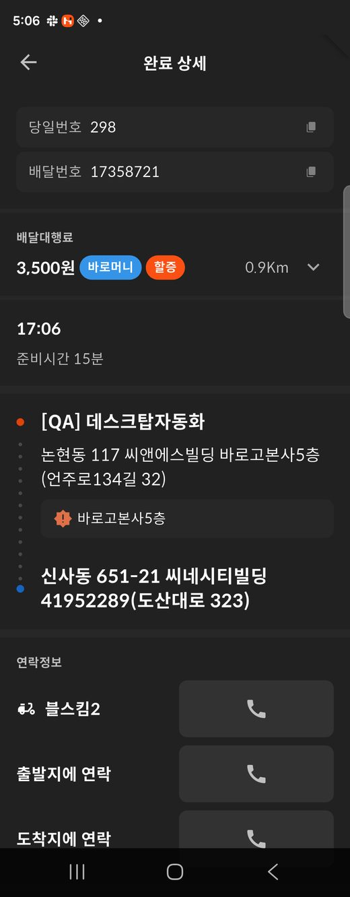
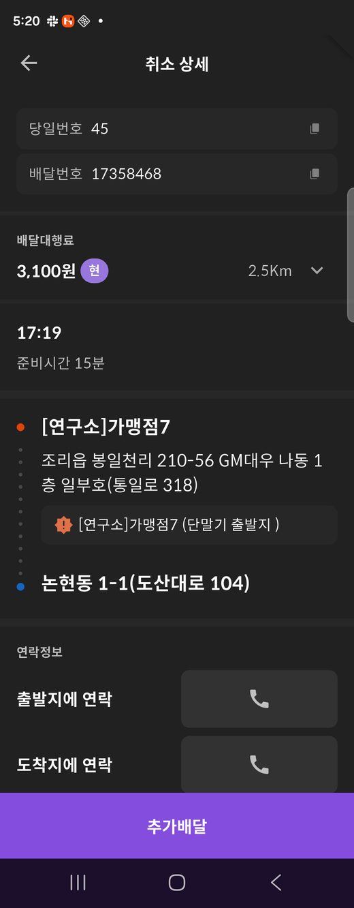
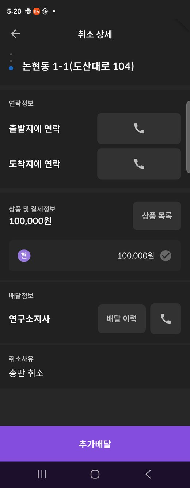
취소된 배달은 화면 아래쪽 취소사유에 사유(예: 총판 취소)가 표시됩니다.
오른쪽 아래 + 버튼
주황색 + 버튼을 누르면 대리 접수, 멀티선택, 맨위로 가기가 열립니다. 멀티선택을 켜면 이 메뉴가 단일선택으로 바뀌어 원래 방식으로 돌아올 수 있습니다. 멀티선택으로 배차하는 방법은 배차하기에 있습니다.
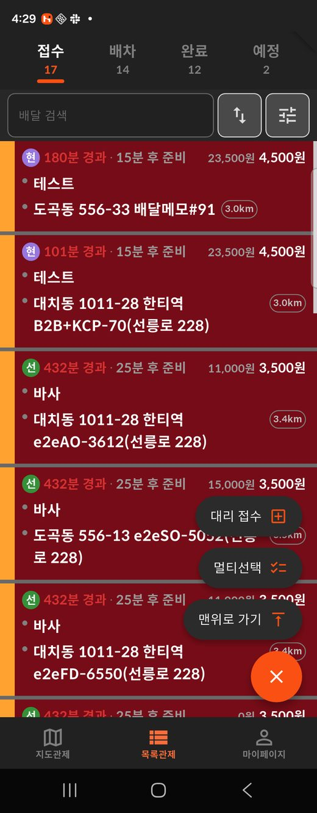
배차하기
접수된 배달을 라이더에게 보낼 때
배차는 두 곳에서 합니다. 지도관제에서는 패널 안에서 라이더를 고르고 확인창으로 끝내고, 목록관제에서는 배달 상세의 배차 버튼으로 라이더 배차 화면에 들어갑니다. 어느 쪽이든 마지막에 즉시배차와 배차요청 중 하나를 고릅니다.
| 방식 | 결과 |
|---|---|
| 즉시배차 | 라이더 승낙 없이 바로 배차됩니다. 즉시 배차 되었어요. 안내가 뜨고, 배달이 곧바로 목록관제 배차 탭에 들어갑니다. |
| 배차요청 | 라이더 앱으로 요청이 가고, 그동안 배달은 접수 탭에 배차요청 표시로 남습니다. 라이더가 승낙하면 배차 탭으로 옮겨가고, 거절하면 다시 접수 상태가 되어 다른 라이더에게 배차할 수 있습니다. |
지도관제에서 배차하기
- 상점을 선택하고 접수 상태의 배달을 누릅니다.
- 패널이 라이더 선택 목록으로 바뀝니다. 위쪽 탭으로 전체, 운행, 대기, 휴식, 자사 라이더를 나눠 보고, 라이더마다 배차·픽업 건수를 확인합니다.
- 배차할 라이더를 누르면 배차하시겠어요? 창이 나옵니다. 즉시배차 또는 배차요청을 누릅니다.
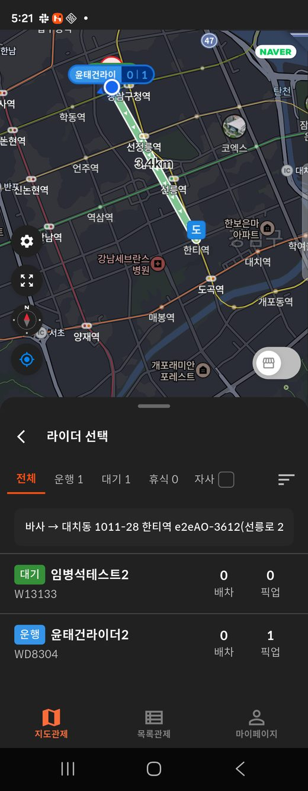
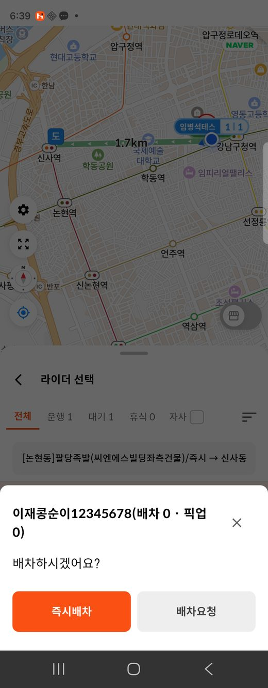
목록관제에서 배차하기
- 접수 탭에서 배달을 눌러 접수 상세를 열고 아래 배차 버튼을 누릅니다.
- 라이더 배차 화면 왼쪽에 지사별 라이더(운행/대기, 운행·완료 건수, 거리)가, 오른쪽에 선택한 라이더의 운행 목록이 나옵니다.
- 라이더를 고르고 아래의 즉시 배차 또는 배차 요청을 누릅니다. 이 버튼은 확인 창 없이 바로 요청됩니다.
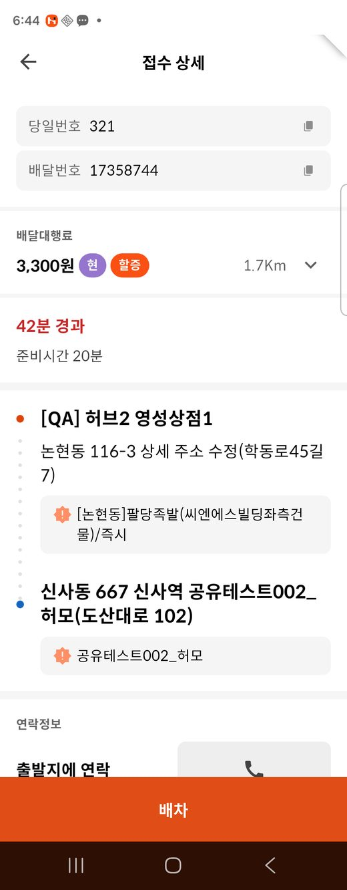
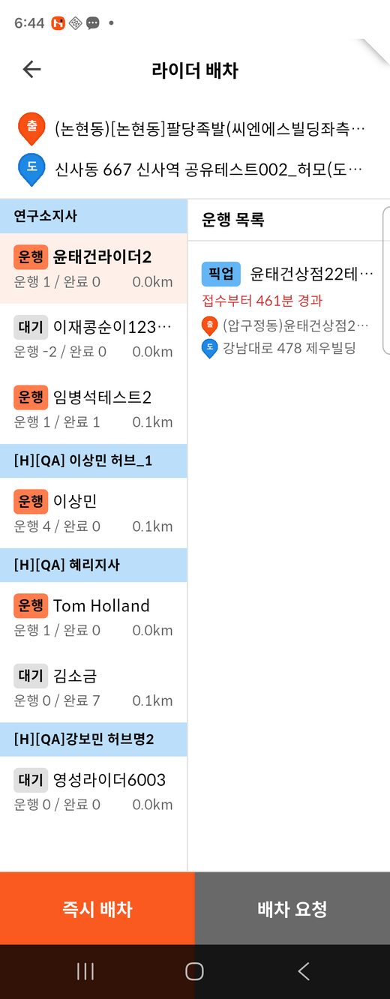
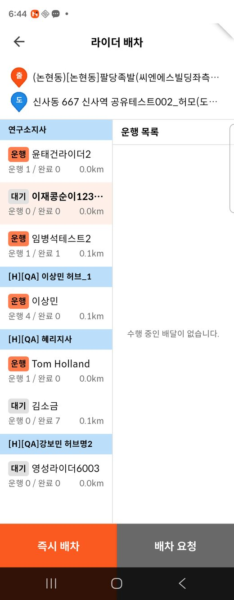
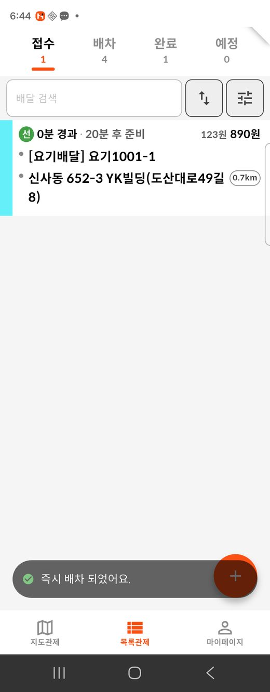
배차요청 후 승낙·거절 확인하기
- 배차요청을 누르면 배차 요청 되었어요. 안내가 뜨고, 배달 카드에 배차요청 표시와 요청한 라이더 이름이 나타납니다.
- 라이더가 거절하면 배차요청 표시가 사라지고 다시 접수 상태로 돌아옵니다.
- 라이더가 승낙하면 상점 패널의 배차지연 건수가 줄고, 목록관제 배차 탭에 배차 표시와 배차 후 N분으로 들어옵니다.
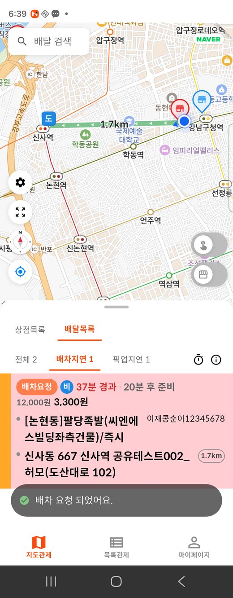
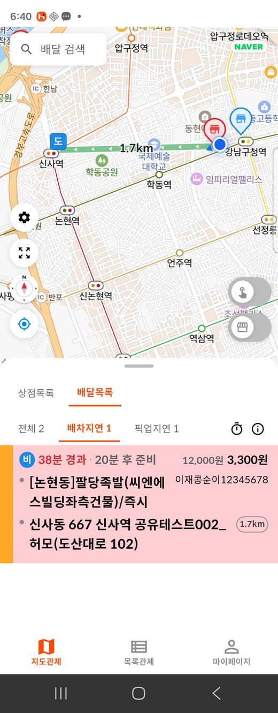
배차한 뒤 바꾸거나 취소하기
배차된 배달을 누르면 상세 아래에 배차변경, 배차취소, 픽업(픽업 완료 뒤에는 완료) 버튼이 있습니다. 배차변경은 라이더 배차 화면으로 이동해 다른 라이더를 고르고, 배차취소는 확인 창을 거친 뒤 취소합니다. 연락정보 맨 위에서 담당 라이더에게 바로 전화할 수 있습니다.
여러 건을 한 번에 배차하기
여러 건을 한 라이더에게 보낼 때는 즉시배차만 됩니다. 2건 이상 고르면 배차요청 버튼이 사라집니다.
| 어디서 | 방법 |
|---|---|
| 지도관제 | 오른쪽 손가락 버튼(다중선택)을 켜고 배달 옆 동그라미를 눌러 고릅니다. 접수 상태 배달은 길게 눌러서도 고를 수 있습니다. 아래 N건 선택 — 라이더 배차하기를 누르면 라이더 목록이 열립니다. 최대 6건까지 고를 수 있습니다. |
| 목록관제 | + 버튼의 멀티선택을 켜고 배달을 고른 뒤 아래 N건 배차 요청을 누르면 라이더 배차 화면이 열립니다. |
대리 접수
상점 대신 배달을 접수해야 할 때
대리 접수는 목록관제의 + 버튼 메뉴, 마이페이지의 대리 접수 메뉴, 상점 관리 목록에서 상점을 길게 누르는 세 가지 방법으로 들어갑니다. 상점을 길게 눌러 들어가면 그 상점과 출발지 주소·메모, 준비시간·결제방식 기본값이 미리 채워집니다.
- 상점을 선택합니다.
- 출발지와 출발지 메모를 확인합니다.
- 도착지를 검색해서 고르고 상세주소를 입력합니다.
- 고객 번호, 특이사항, 상품금액을 입력합니다.
- 결제방식, 상품 준비시간, 대행료 지불방식, 자동취소시간을 정합니다.
- 접수를 누릅니다. 바로 배차하지 않을 배달이면 먼저 대기 상태로 접수를 켭니다. 이렇게 넣은 배달은 목록관제 예정 탭에 대기로 들어갑니다.
상점과 도착지 고르기
상점 선택에서 상점을 고르고 확인을 누르면 출발지가 채워집니다. 도착지 검색은 상점을 고른 뒤에 쓸 수 있고, 주소찾기 화면은 배달가능동과 우편번호 두 탭입니다.
배달가능동 탭은 표시된 배달가능동 안에서만 검색됩니다. 번지, 도로명, 세부지명 중 한 가지 키워드로 검색하면 빠르고, 동을 모를 때는 동 선택에서 전체로 검색합니다. 필요한 주소가 없으면 주소 추가를 요청하라는 안내가 화면에 있습니다. 우편번호 탭은 카카오 우편번호 서비스로 도로명이나 지번을 검색합니다.
상점 관리
상점 정보와 요금 설정을 확인하거나 새 상점을 등록할 때
마이페이지의 상점 관리에서 상점 목록이 열립니다. 위쪽에서 상점 상태(정상 등), VAN, 선불 조건으로 걸러 보고 상점명으로 검색합니다. 상점마다 VAN 진행 상태, 선불회원 상태, 잔액, 상점 코드가 나옵니다. 상점을 길게 누르면 대리 접수 화면으로 바로 이동합니다.
상점 상세의 네 가지 탭
| 탭 | 볼 수 있는 내용 |
|---|---|
| 일반 | 상점 상태, 상점명, 전화번호, 주소, 영업 휴무일, 배달 운영시간, 사업자 정보 |
| 비용설정 | 대행료 결제방식, 관리비 유형과 기본료, 청구 시작일, 월 충전 건수, 관리비 부가세, 건당 상점 수수료, 선차감. 위쪽 배달대행료 버튼에서 구역별 대행료·할증을 봅니다. |
| 접수/운행 | 접수 가능 결제방식, 상품 대금 전달 방식, 최소 준비시간, 자동 취소시간, 접수 제한 잔액, 일 접수 가능 건수, 기본 할증 기능. 위쪽 배달가능동 버튼에서 배달 가능 지역을 봅니다. |
| 계약 설정 | 본사계약 설정과 정산 구분 안내 |
상점 설정 복사
잘 맞춰 둔 상점의 설정을 다른 상점에 그대로 적용할 때 씁니다. 목록 위의 설정복사를 누르고 아래 순서로 진행합니다. 값을 모두 고르기 전에는 적용 버튼이 눌리지 않습니다.
- 원본 상점을 눌러 복사할 상점을 하나 고릅니다. 고르면 배달대행료, 배달가능동, 상점관리비 칩이 나타납니다.
- 적용 대상 상점에서 전체 또는 상점 선택을 고릅니다. 상점 선택은 여러 상점을 체크할 수 있습니다.
- 복사 항목에서 배달대행료, 배달가능동, 상점관리비 중 복사할 항목을 체크합니다.
- 적용을 누릅니다.
VAN 등록 신청
목록 위의 VAN신청을 누르고 신청 대상 상점을 고른 뒤 신청을 누릅니다.
새 상점 등록
목록 오른쪽 위의 등록을 누르면 일반, 비용설정, 접수/운행 세 단계로 입력합니다. 첫 단계에서 상점명, 전화번호, 주소, 영업 휴무일, 배달 운영시간, 사업자번호 등 필수 정보를 채우고 다음을 누릅니다.
주소 검색을 누르면 카카오 주소찾기가 열려 도로명 + 건물번호나 지역명(동/리) + 번지로 검색합니다. 영업 휴무일은 요일을 체크하고, 배달 운영시간은 시작·종료 시각을 돌려서 정합니다. 입력 중에 화면을 나가면 진행을 멈출지 묻는 확인 창이 나옵니다.
라이더 관리
라이더 현황을 보고, 등록하거나 바로머니·매출을 확인할 때
마이페이지의 라이더 관리에서 선택한 허브 소속 라이더 목록이 열립니다. 라이더마다 근무 상태(운행·대기·퇴근 등), 이름, 코드, 소득신고 상태, 배차·픽업·완료 건수가 보입니다. 위쪽에서 라이더 상태(정상·퇴직·정지)와 운행상태로 걸러 보고, 이름으로 검색합니다.
빠른 설정
여러 라이더의 접수 목록 제한과 최대 배차 가능 건수를 같은 값으로 한 번에 바꿉니다. 목록 위 빠른 설정을 누르고 라이더를 한 명 이상 체크한 뒤 선택 완료를 누르면 값을 입력하는 화면으로 넘어갑니다. 라이더 선택 화면에는 라이더마다 지금의 접수제한과 배차가능 값이 보입니다.
라이더 등록
오른쪽 위 등록을 누르면 근무, 차량/보험, 배달 설정 세 단계로 입력합니다. 첫 단계에서 입력하는 항목은 아래와 같습니다. 입력 중에 화면을 나가면 진행을 멈출지 묻는 확인 창이 나옵니다.
| 구분 | 항목 |
|---|---|
| 필수 정보 | 이름, 휴대폰번호(중복확인 버튼), 고용형태, 본사귀속 소득신고, 보수지급방식, 근무시간, 결격여부, 예치금(최대 9,999,999원), 입사일 |
| 선택 정보 | 사번(한글 5자, 영문·숫자 10자까지), 대체연락처, 집 주소(주소검색), 관리자 메모 |
| 고용형태 | 근로계약(정규직포함), 특수고용직, 사업주(허브장) |
| 보수지급방식 | 고정급(출금제한), 실적급(자율출금) |
라이더 바로머니 입금/출금
라이더 상세의 바로머니 아래에 매출통계와 입금/출금 버튼이 있습니다. 입금/출금 화면에서는 입금이나 출금을 고르고, 유형(허브보정충전, 라이더에 따라 출근비)과 금액, 메모를 입력합니다.
매출통계 보기
매출통계는 항목별과 일자별 두 탭입니다. 위쪽에 조회 기간이 표시되며, 처음에는 오늘 하루로 잡혀 있습니다.
| 탭 | 보여주는 것 |
|---|---|
| 항목별 | 바로머니 잔액과 시각별 거래 내역(항목, 증감 금액, 거래 후 잔액). 거래마다 배달번호가 함께 표시됩니다. |
| 일자별 | 기간의 총 수행건수, 총 배달대행수익, 총 실제수익과 날짜별 합계. 자세히 보기를 누르면 총 차감금액, 총 배차취소패널티, 총 조정금액이 추가로 나옵니다. |
항목 옆 ⓘ를 누르면 설명이 나옵니다. 예를 들어 총 차감금액은 설정한 기간 동안 발생한 원천세, 고용보험 월 정산, 산재보험 월 정산, 시간제보험, 자동차감 항목을 모두 더한 금액입니다. 날짜 행을 누르면 그날의 상세(수행건수, 배달대행수익, 배차취소패널티, 원천세, 자동차감, 고용·산재보험 월 정산, 시간제보험, 바로머니 보정·출금·송금·충전)가 열립니다.
바로머니 출금 요청
허브·총판의 바로머니를 계좌로 출금할 때
마이페이지의 출금가능금액 줄을 누르면 출금요청 화면이 열립니다. 제목 옆 ⓘ의 안내대로 출금은 총판 및 허브의 마스터 계정만 쓸 수 있고, 안전한 출금을 위해 소속 허브 정보에 등록된 휴대폰 번호로 문자 인증을 진행합니다.
| 항목 | 설명 |
|---|---|
| 출금계좌 · 출금은행 · 예금주 | 등록된 출금 계좌 정보 |
| 예치금 총합 | 허브 예치금, 허브 부가세 예치금, 고용보험 예치금, 산재보험 예치금의 합. 상세정보를 누르면 항목별로 보입니다. |
| 출금가능 금액 | 바로머니 잔액 − 라이더 바로머니 − 예치금 총합 − 상점 미수금 |
출금 요청 금액을 입력하기 전에는 확인 버튼이 눌리지 않습니다. 입출금 시 수수료 300원이 차감되고, 300원이 넘는 금액만 출금할 수 있습니다. 한도는 1회 9,999,999원 이하, 1일 19,999,999원 이하, 매월 누적 59,999,999원 이하입니다.
운행 설정
비·눈이나 배달 폭주 상황에서 허브나 상점의 배달 조건을 바꿔야 할 때
마이페이지의 운행 설정은 허브, 상점, B2B 세 탭입니다. 허브 탭에서 허브를 고르면 그 허브가 관리하는 상점 전체의 설정이 바뀝니다. 상점 탭은 고른 상점들에만 설정할증, 대행료 추가 할증, 배달 수행 상황을 적용합니다. B2B 탭은 B2B 배송 중단을 해제(재개)하도록 요청하고 처리 이력을 봅니다.
| 항목 | 하는 일 |
|---|---|
| 설정할증 | 스위치를 켜고 할증 사유(기상악화, 폭염, 결빙, 한파, 휴일, 배달폭주, 심야, 기타)를 골라 적용합니다. |
| 대행료 추가 할증 | 설정할증과 별개로 기상 악화, 피크 시간 등 상황에 따라 대행료에 정액·정률 할증을 더합니다. |
| 배달 수행 상황 | 배달이 밀려 지연이 예상되거나 접수를 멈춰야 할 때 원활 / 지연 / 중단으로 바꿉니다. 지연은 지연 시간과 적용 범위(이미 배차된 건 포함 전체, 또는 지금 이후 신규 건부터)를 정합니다. 중단은 허브 소속 전체 상점이 중단된다는 경고가 나옵니다. |
| 배달 노출 시간 | 사용 안 함, 5분, 10분 등으로 정합니다. 5분을 고르면 픽업 예정 시간이 5분 남았을 때 라이더 앱에 노출됩니다. |
| 도착지 중단 관리 | 웹(정책관리 > 도착지 중단 관리)에 미리 등록한 구역을 체크하고 운영 또는 중단을 누릅니다. 중단한 구역의 배달은 모두 거절됩니다. |
| 상점 공유망 설정 | 공유수수료를 정하고 상점을 골라 공유 또는 해제합니다. 재위탁에 동의한 상점만 보입니다. |
| 공유콜 숨김 | 숨김으로 바꾸면 우리 허브 소속 라이더에게 공유콜이 보이지 않습니다. |
배달 내역, 공지, 지원금
지난 배달을 조회하거나 라이더·상점에 공지를 보내거나 자동 지원금을 설정할 때
배달 내역
허브, 기간, 상태·발주·결제 칩, 상점명 검색으로 지난 배달을 조회합니다. 조건에 맞는 건수는 총 N건으로 표시됩니다.
공지 보기
수신 내역에는 바로고(시스템)와 총판이 보낸 공지가 날짜순으로 나오고, 앞의 뱃지로 누가 보냈는지 구분합니다. 공지를 누르면 제목, 작성 일시, 작성자, 공지 내용이 나옵니다.
작성 내역은 내가 보낸 공지입니다. 라이더 중요 공지, 대상 허브, 카테고리, 제목으로 걸러 보고, 공지마다 상태(종료 등), 카테고리(배차요청, 지연, 안전 등), 라이더가 배너를 닫을 수 있는지(닫기 허용 / 닫기 불가)가 표시됩니다. 상세에는 노출 기간이 함께 나옵니다.
라이더 중요 공지는 라이더 앱 홈 위쪽에 배너로 고정되는 공지입니다. 상태에 따라 상세 아래에 버튼이 하나 나옵니다. 노출 중이면 종료, 대기 중이면 즉시 켜기, 종료됐으면 재사용입니다. 재사용을 누르면 카테고리, 제목, 내용, 닫기 허용 여부가 복사된 등록 화면이 열리고 노출 기간만 새로 정합니다.
공지 등록
오른쪽 위 등록을 누르면 라이더 공지와 상점 공지 탭이 있는 작성 화면이 열립니다.
- 라이더 중요 공지 스위치로 중요 공지 여부를 정합니다.
- 대상 라이더(전체 또는 라이더 선택)와 기간(전체 또는 기간 선택)을 정합니다.
- 제목과 내용을 입력하고 등록을 누릅니다.
허브 자동 지원금
금액·적용 시간대·대상 상점을 규칙으로 등록해 두면, 조건에 맞는 주문이 접수될 때 라이더 지원금이 자동으로 들어갑니다. 목록에서 상태로 걸러 보고, 활성 규칙은 즉시 종료할 수 있습니다. 즉시 종료하면 그 뒤에 접수되는 주문에는 지원금이 적용되지 않고, 종료된 규칙은 다시 켤 수 없어 새로 등록해야 합니다.
| 항목 | 설명 |
|---|---|
| 규칙명 | 50자까지 |
| 건당 금액 | 100원 ~ 10,000원 |
| 적용 타입 | 날짜 지정은 정한 시작~종료 시각에 한 번, 매일은 정한 시간대에 반복합니다. |
| 지급 대상 상점 | 전체 상점 또는 특정 상점 |
| 목록의 상태 뱃지 | 활성, 도래 전 취소, 즉시 종료, 자동 만료 등 |
알림과 앱 설정
알림음이 너무 작거나 목록 색을 바꾸고 싶을 때
마이페이지 오른쪽 위의 종 모양은 알림 목록(할증 적용 처리 같은 시스템 알림)이고, 톱니바퀴는 시스템 설정입니다.
| 구역 | 바꿀 수 있는 것 |
|---|---|
| 화면 설정 | 화면모드(자동 등), 글씨크기 |
| 소리 설정 | 접수 볼륨, 알림음 종류, 접수·배차·픽업·메시지 알림모드와 알림음, 메시지 음성(TTS), 상품 준비 완료 음성 안내 |
| 배달목록 설정 | 주소 보기방식, 접수목록 시간설정(경과시간 등), 접수목록 아이템 배경색 |
| 알림 설정 | 알림 노출 방식(간단 알림 등) |
계정에 따라 달라지는 화면
동료와 화면이 다르게 보이거나, 있어야 할 버튼이 안 보일 때
메뉴와 버튼은 계정 권한에 따라 보입니다. 같은 허브 관제 담당자여도 권한이 다르면 보이는 화면이 다를 수 있습니다. 아래는 총판 마스터 계정으로 본 마이페이지입니다.
| 화면·기능 | 보이려면 |
|---|---|
| 라이더 관리, 상점 관리, 대리 접수 메뉴 | 해당 메뉴 보기·접수 권한 |
| 바로머니 잔액 | 바로머니 잔액 조회 권한 (허브·총판 마스터는 권한 없이 볼 수 있음) |
| 출금 요청 | 총판 및 허브의 마스터 계정 |
| 다른 허브 선택 | 총판 사용자이거나 다른 허브 선택 권한 |
| 공유콜 숨김 | 총판 마스터이거나 공유 오더 차단 권한 |
| 상점·라이더 등록, 설정복사, 정보 수정, 바로머니 이체, 매출 조회, 라이더지원금 | 항목별 개별 권한 |
자주 묻는 질문
막혔을 때 먼저 확인할 것
배달이 목록에 안 보여요.
마이페이지에서 고른 관제 허브에 그 상점의 허브가 들어 있는지 먼저 확인하세요. 접수 탭은 필터가 공유배달 숨김이나 주소기반으로 되어 있지 않은지, 완료 탭은 상태·발주·결제 칩이 선택돼 있지 않은지 봅니다. 아직 접수 전인 예약·대기 배달은 예정 탭에 있습니다.
배차요청을 보냈는데 배차 탭에 없어요.
라이더가 아직 승낙하지 않았으면 접수 탭에 배차요청 표시로 남아 있고, 거절했으면 다시 접수 상태로 돌아옵니다. 승낙을 기다리지 않으려면 즉시배차를 쓰세요.
여러 건을 한 번에 배차하고 싶어요.
지도관제는 손가락 모양 다중선택 버튼을 켜고 고른 뒤 라이더 배차하기를, 목록관제는 + 버튼의 멀티선택을 켜고 고른 뒤 N건 배차 요청을 누릅니다. 2건 이상은 즉시배차만 됩니다.
배차가 안 되고 “타 허브 또는 총판 소속 라이더” 안내가 나와요.
고른 라이더에게는 이 배달을 보낼 수 없다는 뜻입니다. 같은 허브의 다른 라이더를 고르세요.
알림이 울리지 않아요.
시스템 설정의 소리 설정에서 접수·배차·픽업 알림모드가 소리로 되어 있는지, 접수 볼륨이 0이 아닌지 확인하세요. 기기 자체의 무음 모드도 확인합니다.
지도에 상점 마커가 빨간색이에요.
배차 지연 또는 픽업 지연이 있는 상점입니다. 상점을 눌러 배차지연, 픽업지연 탭에서 해당 배달을 확인하고 배차하세요. 지연 기준은 지도관제 설정에서 바꿉니다.
출금 요청 메뉴가 안 눌려요.
출금은 총판 및 허브의 마스터 계정만 쓸 수 있습니다. 마스터 계정인데도 안 되면 출금 계좌가 등록되어 있는지 확인하세요.
문의는 어디로 하나요?
마이페이지의 바로고 채팅 상담하기를 누르면 채팅으로 문의할 수 있습니다.